(VIP)
3 years, 11 months ago -
(VIP)
3 years, 11 months ago - ![[Quote]](./Encoding-Batch-TV-BluRay-Encoding-with-BatchGuy-_-Approved-Tutorials-_-Support-_-Forums_files/page_copy.png "Quote")
Introduction
What is BatchGuy?
One of my hobbies is to collect full Blu-ray discs and to either remux or encode them. I am a huge fan of TV Shows, so I typically work with multiple discs that contain tv series that can have over 30 episodes.
The problem that I faced is that most of the GUI tools available do not allow you to work with Blu-rays from a batch point of view. This is fine for movies but having to manually work with each stream on each disc for each episode is very tiresome. Because of this, I decided to make my own tool to ease some of the pain.
As I continued to make modifications to BatchGuy, I started to think that this tool could possibly be helpful to other Blu-ray encoders and remuxers such as myself, so I decided to share this tool with the community.
You can find the latest release of BatchGuy on Github here
In this tutorial, I will be demonstrating how to use BatchGuy to help assist you in encoding Blu-rays.
Required Tools and Dependencies
- Windows 7, 8. 10 x64
- Microsoft .Net Framework 4.5+
- MKVToolNix GUI
- eac3to
- vfw4x264
- x264
- AviSynth 2.5+ and all relevant plugins
- Ripped Blu-ray discs
- BatchGuy
Tips Before Starting
- Make sure you know the correct episode order of the TV Show you are encoding
- Make sure you understand the audio and subtitle streams inside of the Blu-ray ie Commentary, SDH, Force Captions etc etc
BatchGuy Tips
- All BatchGuy Grids can be sorted by double-clicking the header row
- The (.batchGuyEac3toSettings) file sits at the heart of BatchGuy, so ensure that you save this file after entering information on each screen
Step 1. Get an untouched TV Blu-ray DiscYou can get an untouched TV Blu-ray disc from BTN, other trackers, Usenet or rip a Blu-ray disc that you purchased.
Step 2. Install MKVToolNix GUI for WindowsBatchGuy will use mkvmerge, which comes with MKVToolNix GUI, to mux in your extracted Blu-ray artifacts. You can find the MKVToolNix GUI Windows installer here
Step 3. Get eac3toYou can get eac3to here. Save and unzip eac3to to the directory of your choosing.
Step 4. Get vfw4x264.exeBatchGuy uses the CLI tool vfw4x264 to pipe commands to x264. You can find the latest version of vfw4x264 here. Download the exe and place it in the same directory as x264.
Step 5. Get the latest version of x264You can download the latest version of x264 here
Step 6. Install AviSynth 2.5+ (32-bit) and all relevant pluginsYou can download and install the latest official build of AviSynth (32-bit) here. The AviSynth website will also have information on how to install AviSynth plugins. One of the filters I will be using in this guide is ffms2, which can be found here.
Step 7. Get BatchGuyThe latest version of BatchGuy can be found here. Save and unzip the BatchGuy folder to a directory of your choosing.
Step 8. Open up BatchGuy and choose Settings. Ensure that all of the exe paths have been specified, set your default BluRay Title Info audio input/output mappings, and defaults for audio and subtitle language and mkvemerge. Once you are done, use the menu located at the top left corner of the screen to save your settings.
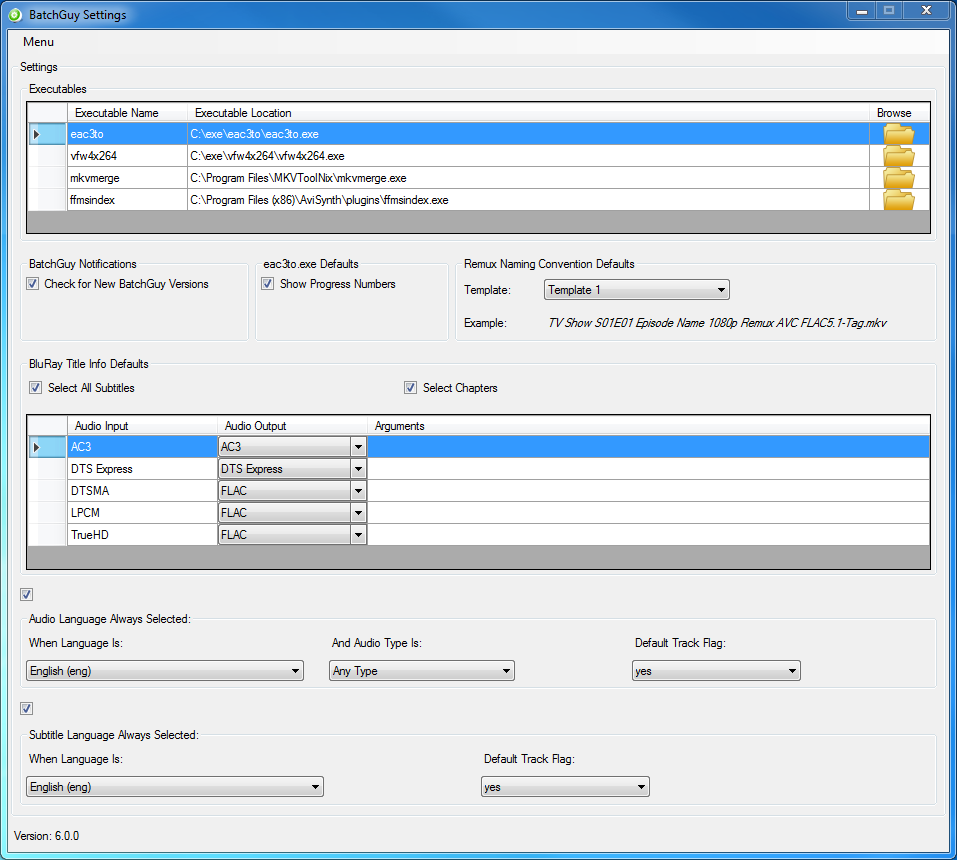
Step 9. Open up BatchGuy and choose Create eac3to Batch File
- On the Create eac3to Batch File Screen, choose the location where you want to save the eac3to (.bat) file
- Next, choose the directory where you want eac3to to output the extracted files (for this tutorial, I will be choosing Directory Per Playlist)
- Next, choose the directory where you want the mkvmerge batch file to be created and the mkvemerge output directory
- Next, drag and drop your Blu-ray discs onto the first grid
- Now, check the Is Selected checkbox of the Blu-ray discs that contains the tracks you would like to extract
- When you click on a Blu-ray disc, this will load the summary (episode) information on the Disc Summary grid
- On the Disc Summary grid, check the Is Selected checkbox of the summary items you wish to extract
- Next, double-click on each summary item selected to view the Blu-ray Title Info Screen
Step 10. On this screen, you will enter the episode number (you must tell BatchGuy the correct episode number) and select video, audio, subtitles, chapters and specify mkvmerge options. You can also add external subtitles but you probably want to do this later in the work flow. After you have entered all relevant information, press the update button
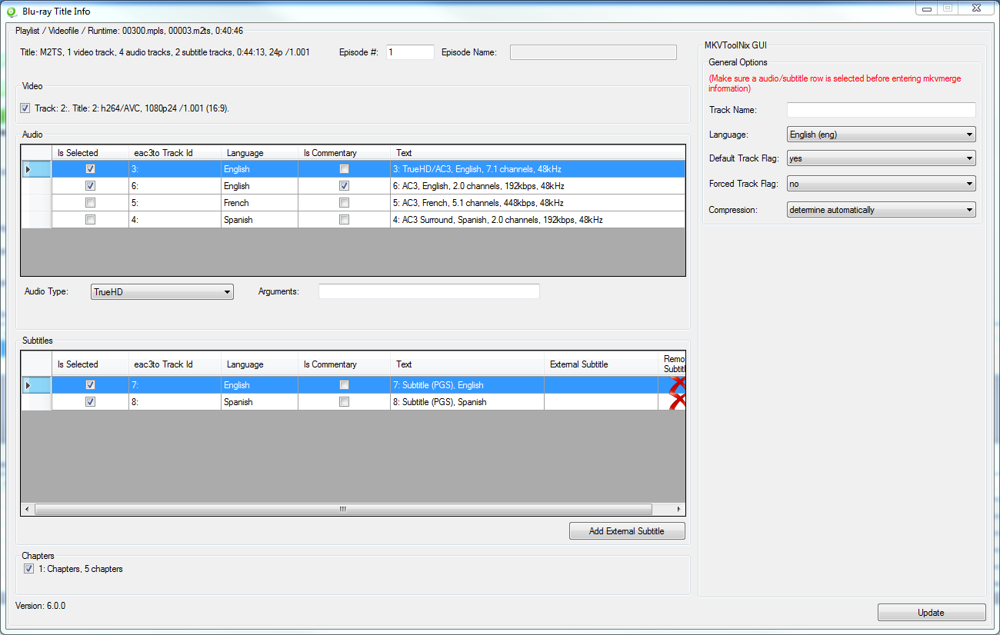
Step 11. After you have completed entering all the summary item information, save the information by using the menu at the upper left part of the screen. You will use the (.batchGuyEac3toSettings) throughout the BatchGuy encoding work flow. After you have saved the information on the screen, press the Create eac3to Batch File and Create mkvmerge Batch File menu items
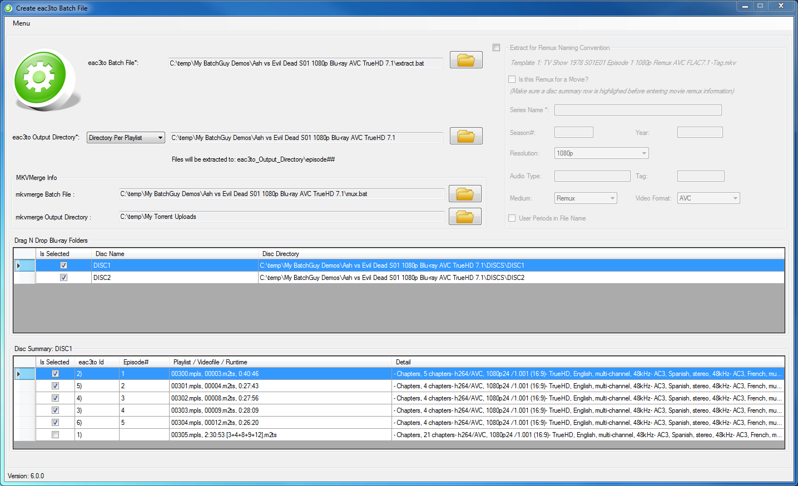
Step 12. Find the eac3to (.bat) file BatchGuy created and double-click it to start extracting the Blu-ray tracks
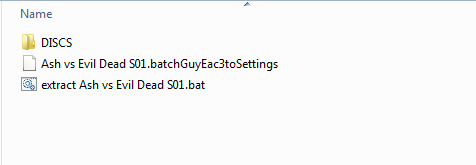
Step 13. After the eac3to (.bat) file completes, you should see folders named episode01, episode02 etc etc containing the extracted Blu-ray tracks
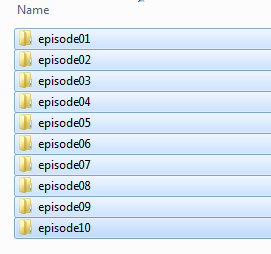
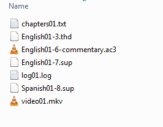
Step 14. As an encoder, you will want to test different AviSynth and x264 settings on a sample of one of the video tracks, for brevity, this step will be skipped
Step 15. Once you have an idea of what AviSynth and x264 settings you want to apply to all the videos, from the main menu, choose Create AviSynth Files
Step 16. The Create AviSynth Files Screen will be disabled when you first open the screen. You will want to use the menu located in the upper left part of the screen or drag and drop the (.batchGuyEac3toSettings) file that you saved on the Create eac3to Batch File Screen to load the screen
Step 17. Once the screen has loaded, select the directory where you want the (.avs) files to be saved. The Directory Type, (.mkv) Files Directory and Number of Files are already filled in based upon the information you provided on the Create eac3to Batch File Screen. We chose Directory Per Playlist on the Create eac3to Batch File Screen, so when you start encoding your files, BatchGuy will expect to find the folder structure output_directory\episode## and a file video##.mkv. If I would have chosen Single Directory on the Create eac3to Batch File Screen, BatchGuy would have expected to find a file video##.mkv in the eac3to output directory root.
Step 18. If you have installed the ffms2 Avisynth plugin and set the exe location in the Settings Screen, you can also choose to make a ffindex batch file. This batch file will create ffindex files that FFVideoSource uses for each episode.
Step 19. Now, select a Video Filter and enter in AviSynth scripts into the AviSynth Template, save the (.batchGuyEac3toSettings) file and press the Create AviSynth (.avs) Files and Create ffindex Batch File (optional) menu items. You should now see(.avs) files created in the directory you chose.
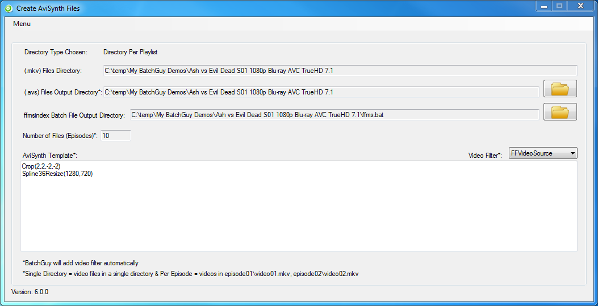
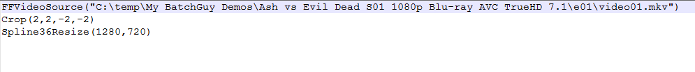
Step 20. Next, on the main menu, select Create x264 Batch File
Step 21. The Create x264 Batch File Screen will be disabled when you first open the screen. You will want to use the menu located in the upper left part of the screen or drag and drop the (.batchGuyEac3toSettings) file that you saved on the Create eac3to Batch File Screen to load the screen
Step 22. Once the screen has loaded, choose the directory where you would like to save the x264 batch file
Step 23. Next, if you want the x264 (.log) files to go to a different directory, just check the Save (.log) file to a different directory checkbox and specify the directory. I chose Directory Per Playlist on the Create eac3to Batch File Screen, so the (.mkv) and (.log) files would go into output_directory\episode##.
Step 24. Next, specify if you want BatchGuy to ignore internal subtitles when creating the mkvmerge file. When this option is checked, even if the internal subtitles on the BluRay Title Info Screen is checked, it will be ignored when the mkvemerge batch file is created. Most people use software to OCR the internal Blu-ray PGS subtitles and will want to use those instead of the internal subtitles
Step 25. Next, drag and drop the (.avs) files BatchGuy created using the Create AviSynth Files Screen onto the grid. In the Encode Name Column on the grid, enter the name of each episode, which will serve as the rendered (.mkv) and (.log) files. After you have entered the Encode Name, select the Blu-ray Episode Number that you specified on the BluRay Title Info Screen to associate the (.avs) file with the correct episode (The Blu-ray Episode Number drop down is based upon how many Playlists you selected on the Create eac3to Batch File Screen)
Step 26. Next, if you need to add external subtitles, double-click on each episode to open the BluRay Title Info Screen. Once the BluRay Title Info Screen is up, click on the Add External Subtitle button to open the External Subtitle Screen. Enter the external subtitle language and specify the location of the external subtitle and press the save button. On the BluRay Title Info Screen, enter in the appropriate mkvmerge options for the external subtitle.
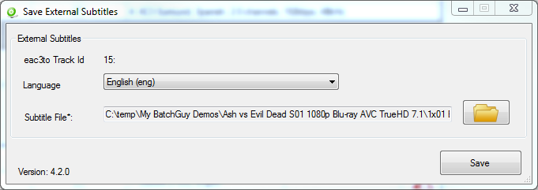
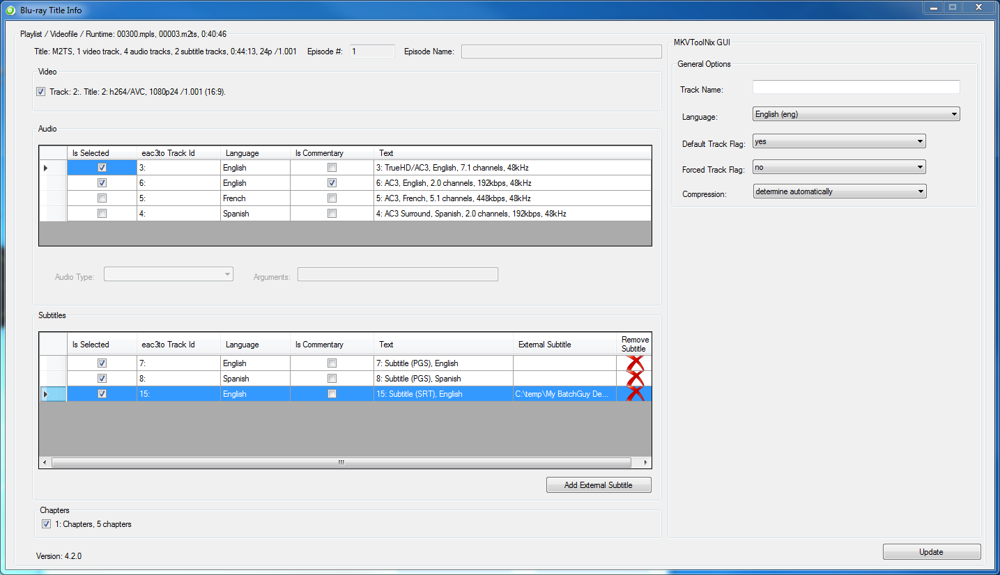
Step 27. Next, enter the x264 scripts in the x264 Template text box and choose an x264 encode type. These x264 settings will be applied to every (.avs) script in the batch. When you are done, save the (batchGuyEac3toSettings) file and press the Create x264 Batch File and Create mkvmerge Batch File menu items. Navigate to the directory where the x264 batch file was created and double-click it to start encoding the batch
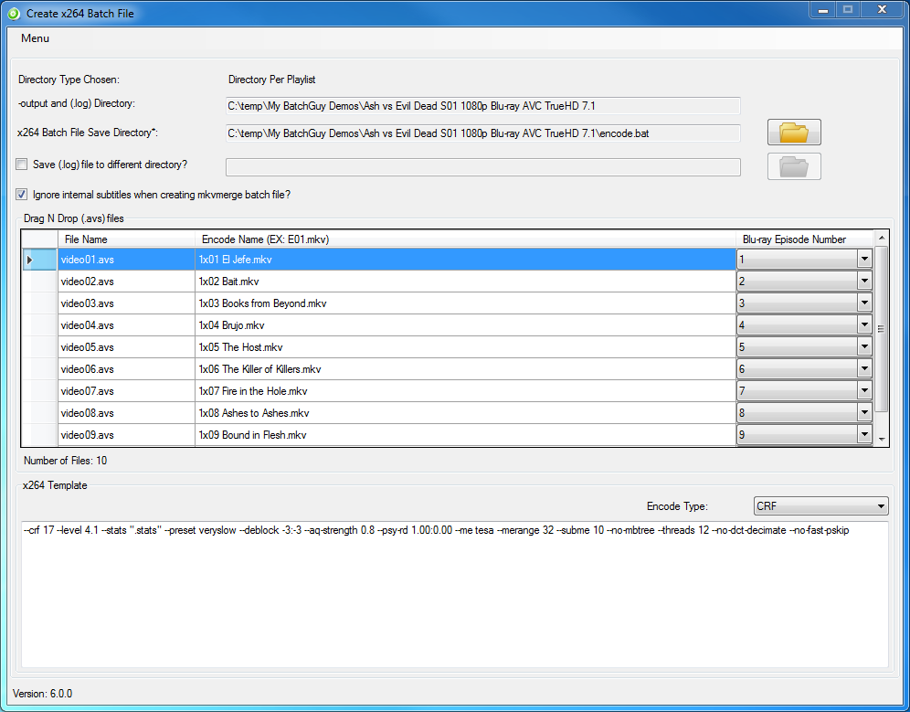
Step 28. After the x264 batch file has completed, you should see x264 rendered (.mkv) and (.log) files in the output directory you chose.
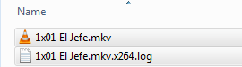
Step 29. Next, navigate to the directory where the mkvmerge batch file was created and double-click it to start the mkvmerge muxing process. After the mkvmerge batch file completes, you should see the muxed (.mkv) files in the mkvmerge output directory you specified on the Create eac3to Batch File Screen
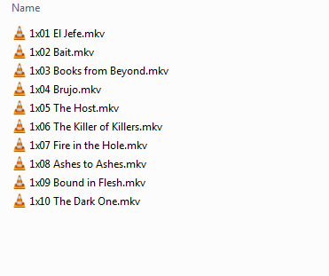
Special Thanks
Just wanted to take the time to send a special thanks to all my fellow HDBits members, remuxers and encoders for providing technical expertise when needed, feature requests, reporting bugs and providing constructive suggestions.
Also, the Github wiki version of this guide can be found here
Last edited by mg58 3 years, 10 months ago
 (Legend)
(The Fattest of Unicorns & Choiest of Johns, UNICHOIN!) 3 years, 5 months ago -
(Legend)
(The Fattest of Unicorns & Choiest of Johns, UNICHOIN!) 3 years, 5 months ago -